Google NotebookLM Trong Văn Phòng:
Từ Đọc Hiểu Tài Liệu Đến Xuất Bản Đa Phương Tiện
Chuyển dịch từ việc chat hỏi đáp bịa đặt (Hallucination) sang cỗ máy AI neo dữ liệu nguồn 100% (Source Grounded), tự động xuất bản Podcast Âm thanh, Sơ đồ tư duy, Video thuyết trình và Infographic đồ họa thông tin.
AI Chat Truyền Thống (ChatGPT / Gemini)
Mô hình mở lấy tri thức từ toàn cõi internet, không nắm rõ văn bản nội bộ công ty bạn. Khi gặp bài toán phức tạp, AI dễ mắc hiện tượng Ảo giác (Hallucination), bịa số liệu nghe rất xuôi tai nhưng sai luật và không có nguồn đối chứng.
Google NotebookLM (Source Grounded)
Mô hình RAG cá nhân hóa khóa chặt vào tài liệu bạn nạp vào (PDF, Docs, Slide, Web, YouTube).
Mọi câu trả lời đều có trích dẫn số trang [1], [2], triệt tiêu 100% bịa đặt và xuất bản trọn bộ 5 định dạng đa phương tiện.
Làm Quen Với NotebookLM & Giải Mã 7 Vùng Giao Diện
Hiểu rõ bản chất công cụ ghi chú thông minh của Google và làm chủ toàn bộ không gian làm việc chuyên nghiệp.
NotebookLM là công cụ ghi chú thông minh tích hợp trí tuệ nhân tạo (AI) giúp bạn đọc – hiểu – tóm tắt – phân tích tài liệu nhanh chóng và chính xác.
https://notebooklm.google.com/ và đăng nhập tài khoản Google.
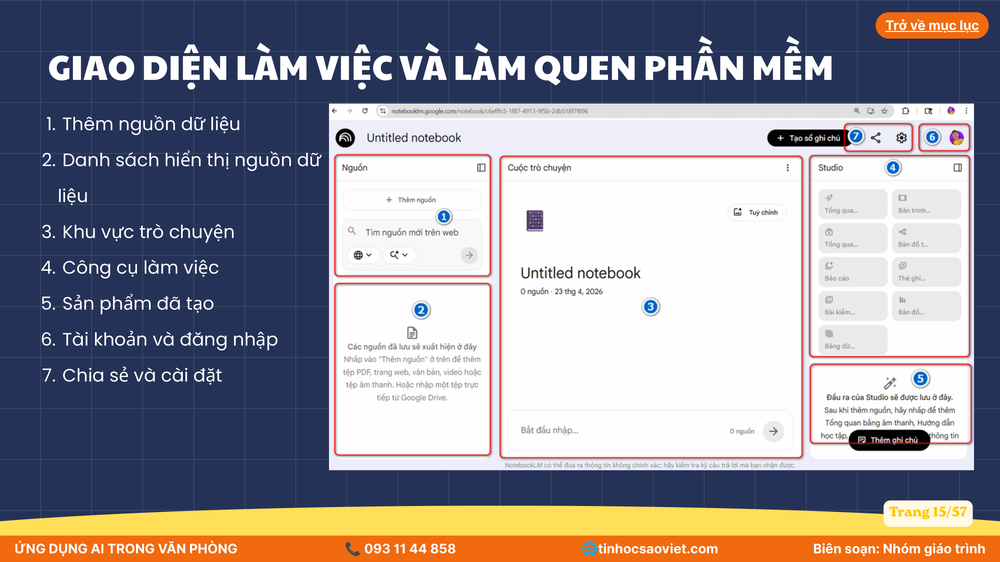
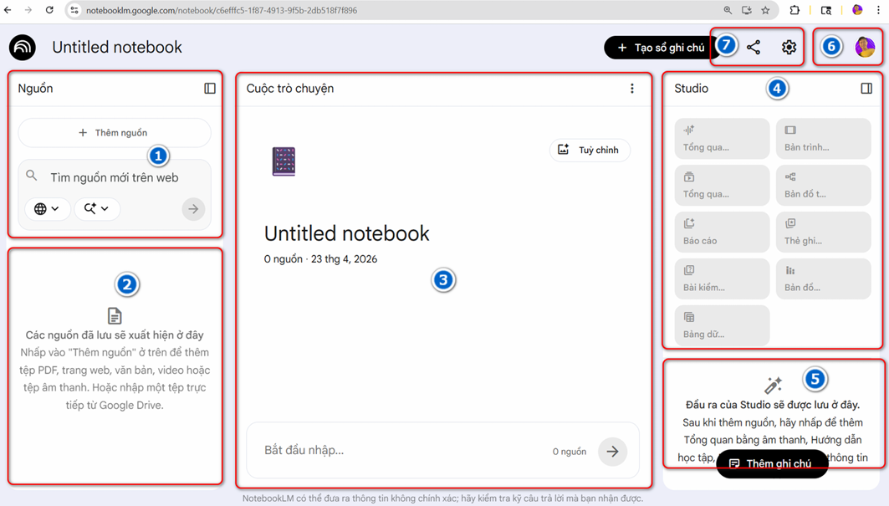
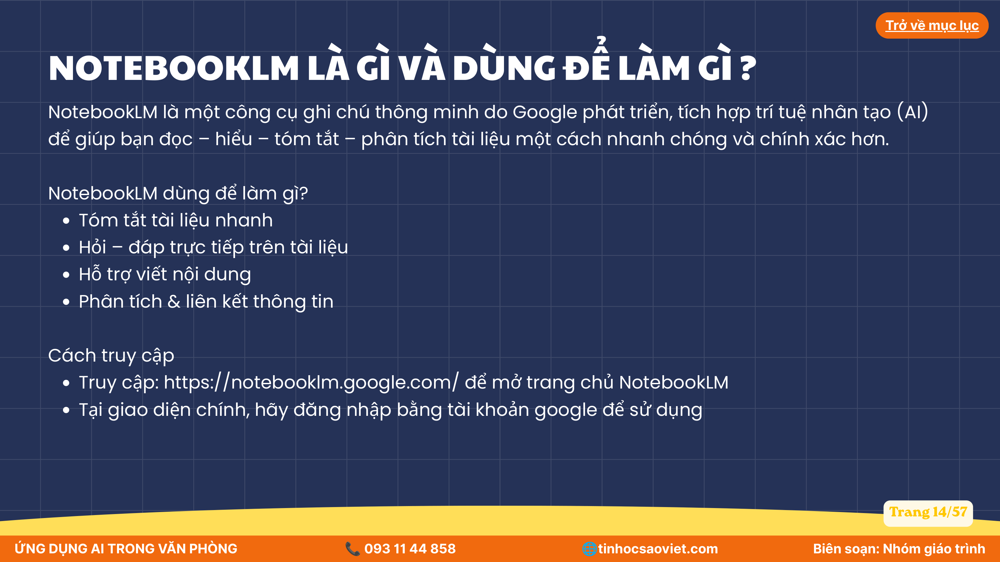
Ứng Dụng AI Tóm Tắt Văn Bản Dài & Bóc Tách Cốt Lõi
Loại bỏ thông tin rác và nội dung lặp lại; chuyển đổi báo cáo hàng chục trang thành bản tóm lược phân cấp chuyên nghiệp.
Tóm tắt ngắn gọn, súc tích, dễ hiểu. Loại bỏ nội dung lặp lại hoặc ít quan trọng. Trình bày theo cấu trúc rõ ràng với tiêu đề và các mục lớn. Sử dụng danh sách bullet hoặc đánh số khi cần. Đảm bảo người đọc chỉ cần xem bản tóm tắt vẫn hiểu được nội dung cốt lõi của tài liệu.
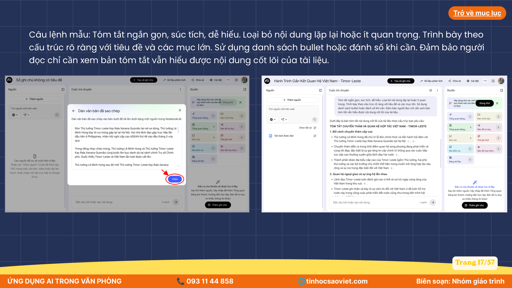
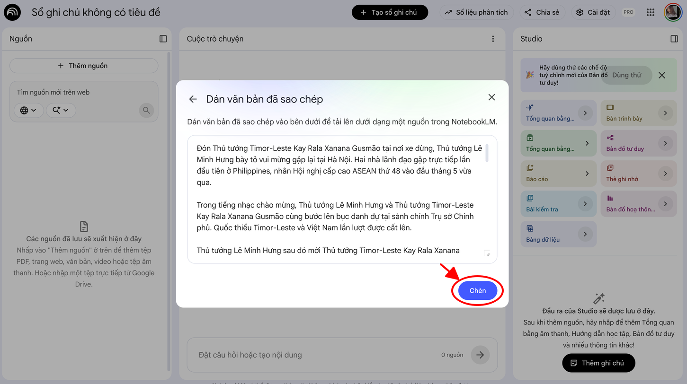
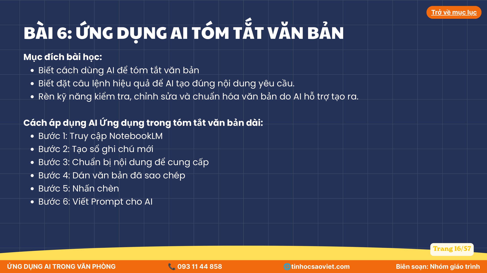
Ứng Dụng AI Tạo Podcast Âm Thanh Đối Thoại (Audio Overview)
Biến tài liệu văn bản thành cuộc thảo luận radio tự nhiên giữa 2 chuyên gia AI, hỗ trợ nghe lướt báo cáo mọi lúc mọi nơi.
Hãy tạo một podcast âm thanh bằng tiếng Việt dựa trên tài liệu được cung cấp. Yêu cầu: - Tóm tắt các ý chính một cách dễ hiểu. - Giải thích các khái niệm quan trọng bằng ngôn ngữ đơn giản. - Đưa ra ví dụ thực tế khi phù hợp. - Trình bày dưới dạng cuộc trò chuyện tự nhiên giữa hai người dẫn chương trình. - Giọng điệu thân thiện, chuyên nghiệp và hấp dẫn. - Kết thúc bằng phần tổng kết ngắn gọn các nội dung quan trọng.
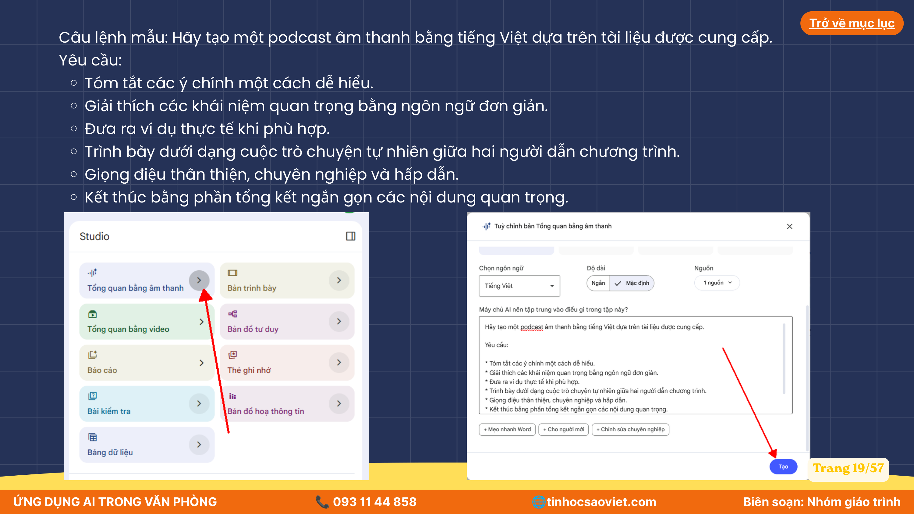
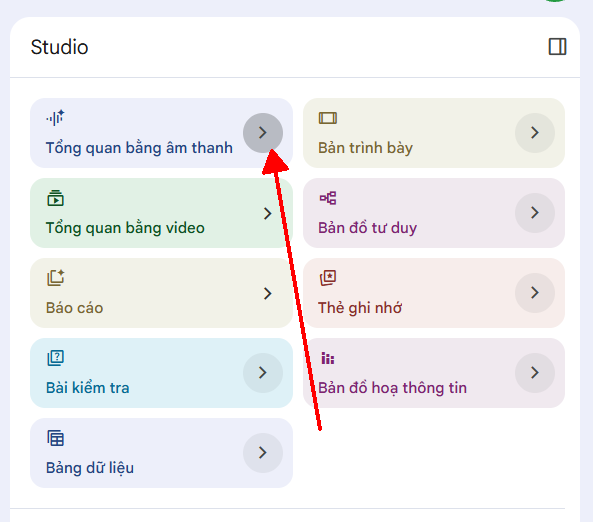
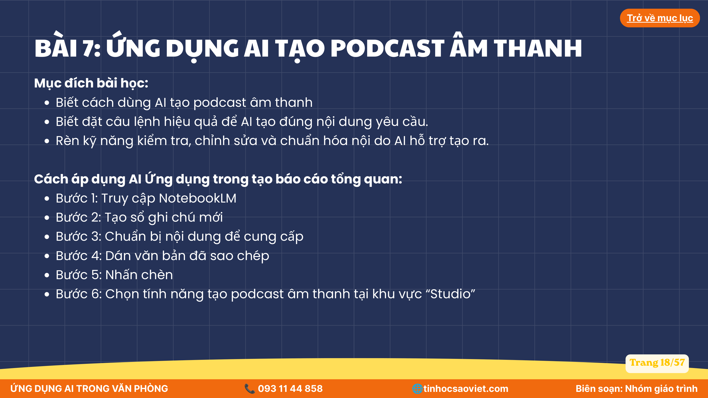
Ứng Dụng AI Tạo Sơ Đồ Tư Duy Hệ Thống Tri Thức
Trực quan hóa tài liệu phức tạp thành cây sơ đồ tư duy logic với các nhánh cấp 1, cấp 2 và từ khóa cô đọng.
Tạo sơ đồ tư duy bằng tiếng Việt dựa trên tài liệu được cung cấp. Yêu cầu: - Xác định chủ đề trung tâm. - Phân chia thành các nhánh chính và nhánh phụ rõ ràng. - Tóm tắt nội dung bằng từ khóa ngắn gọn. - Làm nổi bật các khái niệm, số liệu và kết luận quan trọng. - Sắp xếp theo cấu trúc logic, dễ học và dễ ghi nhớ.
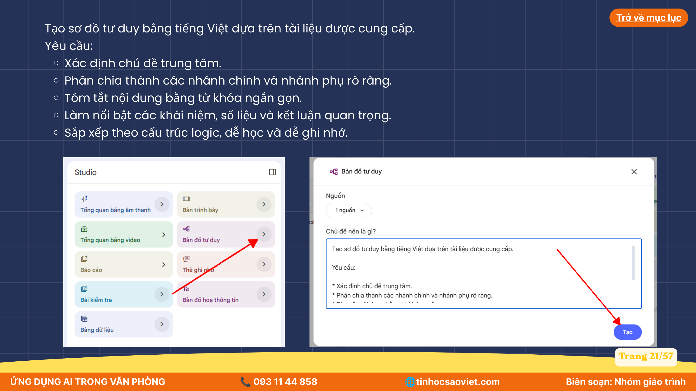
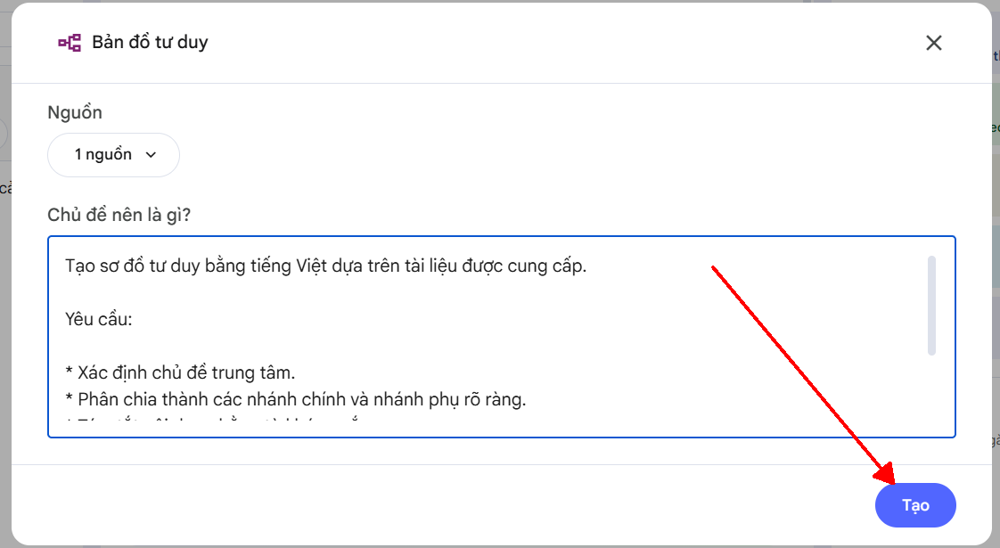
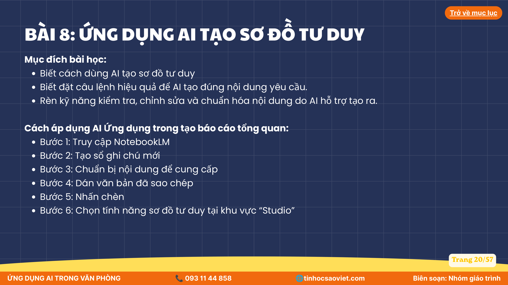
Ứng Dụng AI Tạo Video Mô Tả Tổng Quan (Video Overview)
Tính năng đột phá: Tự động tổng hợp slide thuyết trình, hình ảnh minh họa và giọng đọc thuyết minh chuyên nghiệp từ tài liệu văn bản.
Tạo video tổng quan bằng tiếng Việt dựa trên tài liệu được cung cấp. Yêu cầu: * Tóm tắt các nội dung quan trọng nhất. * Trình bày theo cấu trúc rõ ràng, dễ theo dõi. * Sử dụng hình ảnh minh họa phù hợp với nội dung. * Nhấn mạnh các số liệu, khái niệm và kết luận chính. * Giọng thuyết minh chuyên nghiệp, dễ hiểu. * Kết thúc bằng phần tổng kết ngắn gọn.
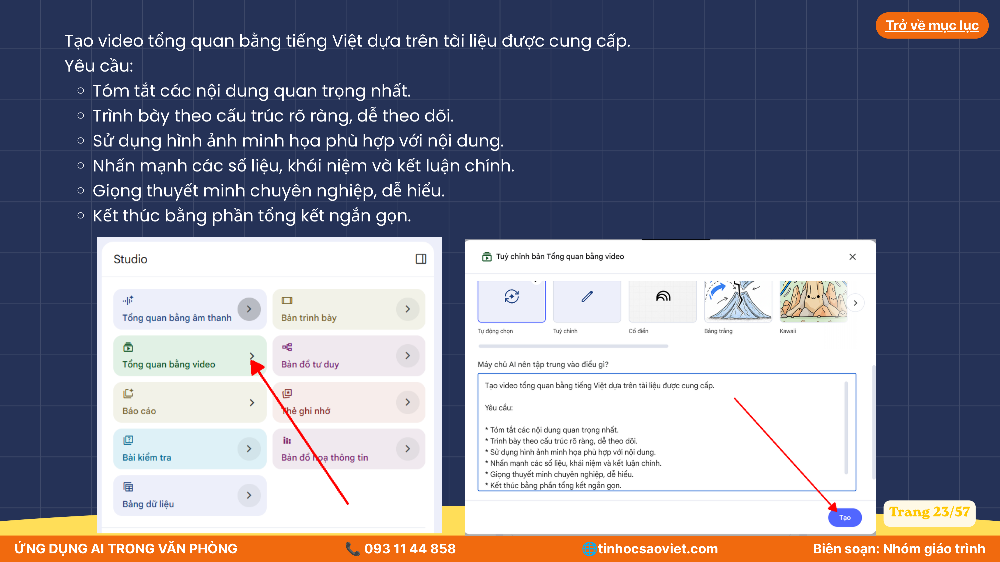
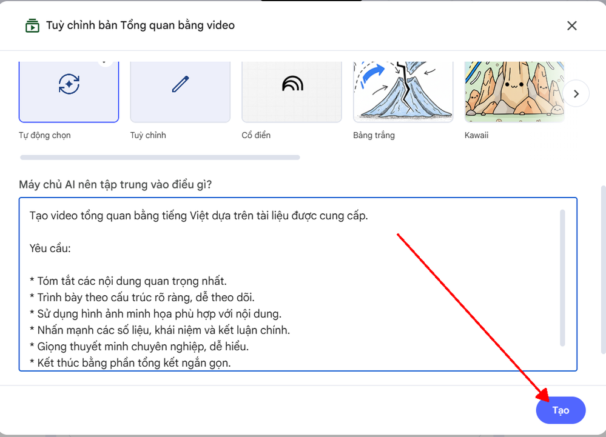
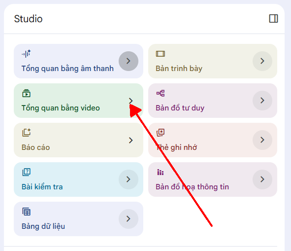
Ứng Dụng AI Tạo Hình Ảnh Mô Tả & Bản Đồ Họa Thông Tin (Infographic)
Chuyển hóa dữ liệu và quy trình thành hình ảnh minh họa ấn tượng phục vụ truyền thông nội bộ và slide thuyết trình.
Tạo hình ảnh minh họa bằng tiếng Việt dựa trên tài liệu được cung cấp. Yêu cầu: - Thể hiện chính xác nội dung và ý tưởng chính. - Làm nổi bật các khái niệm quan trọng. - Sử dụng phong cách trực quan, dễ hiểu. - Bố cục rõ ràng, chuyên nghiệp. - Hình ảnh phù hợp với đối tượng người xem và mục đích của tài liệu.
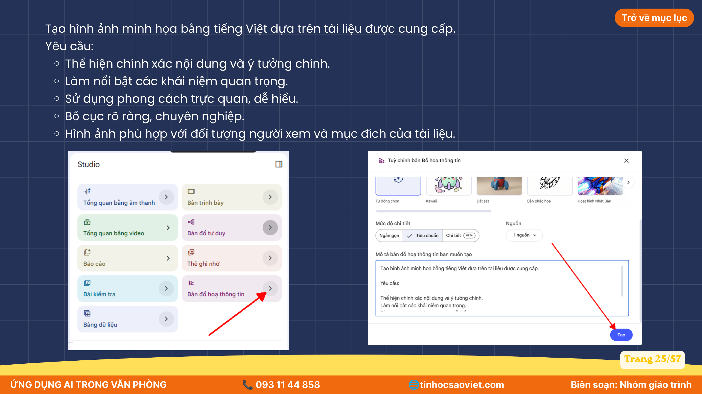
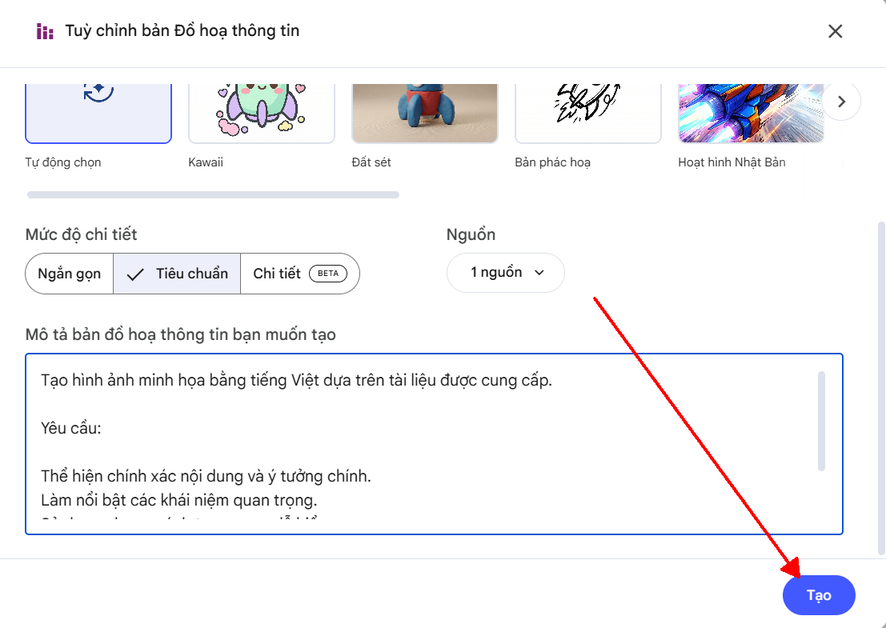
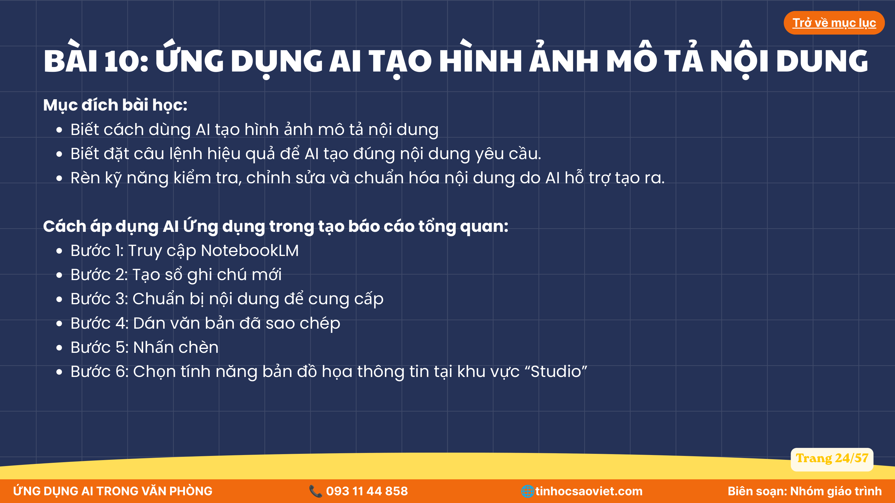
Bộ 4 Bài Tập Tình Huống Doanh Nghiệp (Bài 6, 9, 10 & AI Agent Slide)
Vận dụng NotebookLM và AI Agent vào 4 kịch bản công sở thực tế. Mỗi bài tập đều có sẵn nguồn dữ liệu mẫu để bấm copy hoặc tải file CSV nạp cho AI thực thi ngay lập tức!
Thẩm Định Đề Án Tái Cấu Trúc Kinh Doanh & Chuyển Đổi Số Q3 Cho Ban Tổng Giám Đốc
Tổng Giám Đốc chuẩn bị họp Hội đồng Quản trị trong 15 phút tới và nhận được bản đề án dài gần 30 trang. Bạn cần nạp tài liệu vào NotebookLM và trích xuất một bản Executive Summary 1 trang A4 bóc tách rõ: 3 điểm nghẽn nghiêm trọng, 4 chỉ số tài chính trọng yếu và bảng phân công hành động (Action Items) có Deadline cụ thể.
ĐỀ ÁN TÁI CẤU TRÚC KINH DOANH & CHUYỂN ĐỔI SỐ DOANH NGHIỆP - QUÝ 3/2026 Đơn vị lập: Ban Chiến lược & Chuyển đổi số nội bộ 1. ĐÁNH GIÁ THỰC TRẠNG HIỆN HÀNH: - Doanh thu 6 tháng đầu năm đạt 42.5 tỷ VNĐ (đạt 78% kế hoạch), tuy nhiên lợi nhuận ròng sụt giảm 14% so với cùng kỳ do chi phí vận hành thủ công tăng cao. - 3 Điểm nghẽn nghiêm trọng: + Điểm nghẽn 1: 65% thời gian của nhân viên khối văn phòng bị tiêu hao vào nhập liệu Excel và tổng hợp báo cáo giấy tờ thủ công. + Điểm nghẽn 2: Tỷ lệ khách hàng rời bỏ dịch vụ (Churn rate) tăng lên 8.2% do thời gian phản hồi khiếu nại trung bình mất 48 giờ (mục tiêu là dưới 4 giờ). + Điểm nghẽn 3: Dữ liệu giữa phòng Kinh doanh, Kế toán và Kho vận bị phân mảnh, dẫn đến tình trạng sai lệch tồn kho thực tế lên tới 12%. 2. MỤC TIÊU TÀI CHÍNH VÀ KPI TRỌNG YẾU QUÝ 3: - Chỉ số 1: Cắt giảm tối thiểu 30% chi phí vận hành thủ công thông qua việc ứng dụng tự động hóa AI và Agent quy trình. - Chỉ số 2: Rút ngắn thời gian xử lý khiếu nại khách hàng từ 48 giờ xuống còn tối đa 2 giờ (tỷ lệ giải quyết tự động đạt 70%). - Chỉ số 3: Tăng doanh thu bán hàng Q3 lên 28 tỷ VNĐ (tăng trưởng 18% so với Q2). - Chỉ số 4: Kiểm soát tỷ lệ sai lệch tồn kho kho vận dưới ngưỡng 1.5%. 3. KẾ HOẠCH HÀNH ĐỘNG CỤ THỂ (ACTION PLAN): - Hạng mục A: Triển khai thí điểm giải pháp AI Assistant hỗ trợ chăm sóc khách hàng 24/7 (Phụ trách: Anh Hoàng - Trưởng phòng CSKH, Deadline: 30/10/2026). - Hạng mục B: Chuẩn hóa hệ thống dữ liệu tập trung ERP kết nối tự động với Kế toán và Kho (Phụ trách: Chị Mai - Giám đốc Công nghệ, Deadline: 15/11/2026). - Hạng mục C: Đào tạo kỹ năng ứng dụng AI trong văn phòng cho 150 nhân sự toàn công ty (Phụ trách: Anh Tuấn - Trưởng ban Đào tạo HR, Deadline: 05/11/2026).
Dựa trên tài liệu Đề án Tái cấu trúc Q3 vừa được nạp vào, hãy đóng vai trò là Trợ lý Chiến lược của Tổng Giám Đốc. Hãy lập một bản TÓM TẮT ĐIỀU HÀNH (EXECUTIVE SUMMARY) ngắn gọn, súc tích và sắc bén theo đúng cấu trúc sau: 1. ĐÁNH GIÁ 3 ĐIỂM NGHẼN CỐT LÕI (Dạng gạch đầu dòng có phân tích tác động trực tiếp). 2. BẢNG TỔNG HỢP 4 CHỈ SỐ KPI TÀI CHÍNH TRỌNG YẾU (Bao gồm: Chỉ số, Mục tiêu số liệu và Thời hạn). 3. MA TRẬN HÀNH ĐỘNG ƯU TIÊN CAO (Action Matrix dưới dạng bảng: STT | Hạng mục công việc | Người phụ trách (PIC) | Hạn chót (Deadline)). Yêu cầu: Số liệu phải bám sát 100% tài liệu nguồn, không suy diễn thêm số liệu ngoài. Giọng văn dứt khoát, chuyên nghiệp phục vụ cấp lãnh đạo.
[1] của NotebookLM.
Xuất Bản Video Thuyết Trình Sinh Động Về "Chính Sách Nhân Sự & Thưởng KPI 2026"
Phòng Nhân sự vừa ban hành bộ quy chế đãi ngộ mới dài 40 trang. Do nhân viên các chi nhánh ngại đọc văn bản dài, Giám đốc Nhân sự yêu cầu bạn dùng tính năng Tổng quan bằng video (Video Overview) trong NotebookLM để tạo một video thuyết minh 3 phút ngắn gọn, hình ảnh sinh động, truyền cảm hứng để phát tại cuộc họp toàn công ty (Town Hall Meeting).
CHÍNH SÁCH ĐÃI NGỘ, PHÚC LỢI VÀ THƯỞNG HIỆU QUẢ CÔNG VIỆC NĂM 2026 Ban hành bởi: Khối Quản trị Nguồn Nhân lực Toàn quốc 1. CHÍNH SÁCH LƯƠNG & ĐIỀU CHỈNH ĐỊNH KỲ: - Toàn bộ nhân viên chính thức được xét tăng lương định kỳ 2 lần/năm (vào tháng 06 và tháng 12) dựa trên kết quả đánh giá OKR/KPI đạt từ mức Hoàn thành tốt trở lên. - Mức tăng lương trung bình từ 8% đến 25% tùy theo thành tích cống hiến vượt trội. 2. GÓI BẢO HIỂM SỨC KHỎE CAO CẤP (HEALTHCARE BENEFIT): - Cấp thẻ bảo hiểm sức khỏe quốc tế hạn mức 250 triệu VNĐ/năm cho nhân sự làm việc từ 12 tháng trở lên, chi trả toàn diện viện phí tại các bệnh viện tư nhân và quốc tế. - Khám sức khỏe định kỳ VIP hàng năm tại bệnh viện quốc tế đối tác vào tháng 4. 3. QUY CHẾ THƯỞNG KPI & DỰ ÁN ĐẶC BIỆT: - Thưởng tháng 13 cam kết 100% cho mọi nhân viên gắn bó đủ 12 tháng. - Thưởng hiệu quả kinh doanh cuối năm (Thưởng tháng 14, 15, 16) căn cứ trên lợi nhuận toàn tập đoàn. - Giải thưởng "Ngôi sao sáng kiến AI": Thưởng nóng 10 - 50 triệu VNĐ cho cá nhân hoặc nhóm ứng dụng AI tiết kiệm được từ 100 giờ làm việc/tháng cho đơn vị. 4. CÂN BẰNG CÔNG VIỆC & CUỘC SỐNG (WORK-LIFE BALANCE): - Chế độ làm việc linh hoạt (Hybrid Work): 2 ngày làm việc từ xa (Work From Home) mỗi tuần. - Phụ cấp ăn trưa 1.200.000 VNĐ/tháng và trợ cấp thiết bị công nghệ 500.000 VNĐ/tháng. - Nghỉ phép 15 ngày/năm (tăng thêm 1 ngày sau mỗi 2 năm cống hiến liên tục).
Tạo video tổng quan bằng tiếng Việt dựa trên tài liệu Chính sách Phúc lợi 2026 được cung cấp. Yêu cầu: * Tóm tắt các nội dung quan trọng nhất: Lương thưởng 2 lần/năm, Gói bảo hiểm sức khỏe VIP 250 triệu, Thưởng sáng kiến AI, và Chế độ Hybrid 2 ngày/tuần. * Trình bày theo cấu trúc rõ ràng, dễ theo dõi, mạch lạc từng quyền lợi. * Sử dụng hình ảnh minh họa phù hợp với môi trường công sở hiện đại và năng động. * Nhấn mạnh các số liệu, hạn mức tiền thưởng và điều kiện hưởng chính sách. * Giọng thuyết minh chuyên nghiệp, truyền cảm hứng, thân thiện và dễ hiểu. * Kết thúc bằng phần tổng kết ngắn gọn khích lệ tinh thần cống hiến của nhân sự.
Thiết Kế Bản Đồ Họa Thông Tin (Infographic) "Quy Trình Onboarding 7 Ngày Nhân Sự Mới"
Nhân viên mới thường cảm thấy bỡ ngỡ và choáng ngợp trong tuần đầu tiên đi làm. Bộ phận Đào tạo & Truyền thông nội bộ cần một ấn phẩm trực quan dạng Bản đồ họa thông tin (Infographic) tóm lược lộ trình 7 ngày rõ ràng để gửi kèm email chúc mừng ngày đầu tiên và in dán tại bảng tin các phòng ban.
QUY TRÌNH HỘI NHẬP & ONBOARDING 7 NGÀY CHO NHÂN SỰ MỚI Áp dụng: Toàn bộ cán bộ nhân viên mới gia nhập công ty GIAI ĐOẠN 1: NGÀY ĐẦU TIÊN (DAY 1) - CHÀO ĐÓN & HÒA NHẬP - 08:30: Đón tiếp tại Lễ tân, nhận Bộ quà chào mừng (Welcome Kit: Thẻ nhân viên, Áo đồng phục, Sổ tay văn hóa). - 09:30: Bàn giao vị trí làm việc, kích hoạt tài khoản Email công ty, Slack và phần mềm chuyên môn. - 11:30: Ăn trưa thân mật cùng Trưởng phòng và Người hướng dẫn (Mentor 1-on-1). - 14:00: Tham gia buổi giới thiệu Văn hóa doanh nghiệp & Các quy chế bảo mật thông tin nội bộ. GIAI ĐOẠN 2: NGÀY 2 VÀ 3 (DAY 2-3) - ĐÀO TẠO CÔNG CỤ VÀ QUY TRÌNH - Làm quen với các công cụ số: Phần mềm quản lý dự án Jira, Hệ thống ERP nội bộ, và Bộ công cụ AI văn phòng. - Đọc tài liệu bàn giao công việc và tìm hiểu các đầu mối liên hệ (SOPs) của phòng ban. GIAI ĐOẠN 3: NGÀY 4 VÀ 5 (DAY 4-5) - THỰC CHIẾN CÙNG MENTOR - Bắt tay vào xử lý nhiệm vụ thực tế đầu tiên dưới sự kèm cặp sát sao của Mentor. - Tham gia cuộc họp giao ban tuần của đội nhóm để nắm nhịp điệu công việc. GIAI ĐOẠN 4: NGÀY THỨ 7 (DAY 7) - CHECK-IN & THIẾT LẬP MỤC TIÊU THỬ VIỆC - Buổi trò chuyện 30 phút cùng Quản lý trực tiếp (Check-in 1 tuần đầu): Giải đáp các vướng mắc phát sinh. - Ký kết Kế hoạch Mục tiêu 60 ngày thử việc (Probation Objectives).
Tạo hình ảnh minh họa đồ họa thông tin (Infographic) bằng tiếng Việt dựa trên tài liệu Quy trình Onboarding 7 ngày được cung cấp. Yêu cầu: - Thể hiện chính xác tiến trình hội nhập gồm 4 giai đoạn rõ ràng: + Giai đoạn 1 (Ngày 1): Chào đón & Hòa nhập + Giai đoạn 2 (Ngày 2-3): Đào tạo Công cụ & Quy trình + Giai đoạn 3 (Ngày 4-5): Thực chiến cùng Mentor + Giai đoạn 4 (Ngày 7): Check-in & Mục tiêu Thử việc - Phong cách thiết kế: Đồ họa thông tin hiện đại (Modern Infographic), trực quan, năng động, gam màu tươi sáng, dễ nhớ. - Bố cục phân tầng dạng dòng thời gian (Timeline Roadmap) từ trên xuống dưới hoặc từ trái qua phải. - Làm nổi bật các mốc thời gian và biểu tượng trực quan tương ứng với từng mốc.
Phân Tích Dữ Liệu Kinh Doanh 9 Tháng & Tự Động Hóa Bộ Slide Báo Cáo Chiến Lược
Bạn đóng vai trò là Chuyên viên Phân tích Dữ liệu (Lead Data Analyst). Ban Giám Đốc chuẩn bị họp Hội đồng Quản trị để chốt kế hoạch Quý 4. Bạn cần giao việc cho AI Agent: Đọc tệp số liệu đa kênh 9 tháng (750 dòng giao dịch thực tế), tự động phát hiện nghịch lý "Doanh thu TikTok Shop tăng vọt nhưng tỷ lệ hoàn hủy chạm mốc 13.4% và CSAT tụt dốc", sau đó chuyển hóa toàn bộ phân tích thành Bộ Slide Trình Chiếu Trực Quan Hóa Dữ Liệu 4 Trang chuyên nghiệp.
| Tháng | Kênh Bán Hàng | Doanh Thu (Tr) | Chi Phí Ads (Tr) | Đơn Thành Công | Hoàn/Hủy | CSAT |
|---|---|---|---|---|---|---|
| T1 (Gốc) | TikTok Shop | 620 | 150 | 3,100 | 8.5% | 4.4 ⭐ |
| T1 (Gốc) | Shopee | 850 | 120 | 3,400 | 4.2% | 4.7 ⭐ |
| T8 | TikTok Shop | 1,750 | 460 | 8,750 | 12.8% | 4.0 ⭐ |
| T9 (Hiện tại) | TikTok Shop 🚀 | 2,100 | 550 | 10,500 | 13.4% ⚠️ | 3.9 ⭐ |
| T9 (Hiện tại) | Shopee | 1,650 | 240 | 6,600 | 4.5% | 4.7 ⭐ |
| T9 (Hiện tại) | Website Direct | 710 | 100 | 1,690 | 1.5% | 4.9 ⭐ |
| T9 (Hiện tại) | Showroom | 760 | 55 | 870 | 0.8% | 5.0 ⭐ |
Thang,Kenh_Ban_Hang,Doanh_Thu_Trieu_VND,Chi_Phi_Ads_Trieu_VND,Don_Hang_Thanh_Cong,Ty_Le_Hoan_Huy_Percent,Gia_Tri_Don_TB_K_VND,CSAT_Rating T1,Shopee,850,120,3400,4.2,250,4.7 T1,TikTok Shop,620,150,3100,8.5,200,4.4 T1,Website Direct,410,60,1170,2.1,350,4.8 T1,Showroom,520,40,650,1.2,800,4.9 T2,Shopee,920,130,3680,4.0,250,4.7 T2,TikTok Shop,780,190,3900,9.1,200,4.3 T2,Website Direct,430,65,1220,2.0,352,4.8 T2,Showroom,490,40,610,1.1,803,4.9 T3,Shopee,1100,160,4400,4.5,250,4.6 T3,TikTok Shop,1050,260,5250,10.2,200,4.2 T3,Website Direct,480,70,1330,2.2,360,4.8 T3,Showroom,580,45,710,1.0,816,4.9 T4,Shopee,1020,150,4080,4.3,250,4.7 T4,TikTok Shop,980,240,4900,9.8,200,4.3 T4,Website Direct,510,75,1380,2.1,369,4.8 T4,Showroom,610,45,740,1.2,824,4.9 T5,Shopee,1250,180,5000,4.6,250,4.6 T5,TikTok Shop,1350,340,6750,11.5,200,4.1 T5,Website Direct,550,80,1450,1.9,379,4.8 T5,Showroom,640,50,770,1.0,831,4.9 T6,Shopee,1400,210,5600,4.8,250,4.6 T6,TikTok Shop,1600,420,8000,12.1,200,4.0 T6,Website Direct,590,85,1510,1.8,390,4.9 T6,Showroom,670,50,800,0.9,837,4.9 T7,Shopee,1320,195,5280,4.4,250,4.7 T7,TikTok Shop,1450,380,7250,11.2,200,4.2 T7,Website Direct,620,90,1550,1.7,400,4.9 T7,Showroom,690,50,810,0.9,851,4.9 T8,Shopee,1480,220,5920,4.7,250,4.6 T8,TikTok Shop,1750,460,8750,12.8,200,4.0 T8,Website Direct,660,95,1610,1.6,409,4.9 T8,Showroom,720,55,830,0.8,867,4.9 T9,Shopee,1650,240,6600,4.5,250,4.7 T9,TikTok Shop,2100,550,10500,13.4,200,3.9 T9,Website Direct,710,100,1690,1.5,420,4.9 T9,Showroom,760,55,870,0.8,873,5.0
Bạn là một AI Agent chuyên gia về Phân tích Dữ liệu và Thiết kế Trình Chiếu Chiến Lược (Data Visualization & Strategic Deck Designer). Tôi cung cấp cho bạn tệp dữ liệu CSV kết quả kinh doanh 9 tháng năm 2026 của 4 kênh bán lẻ (Shopee, TikTok Shop, Website Direct, Showroom). Nhiệm vụ của bạn: Hãy phân tích số liệu và tự động khởi tạo BỘ SLIDE BÁO CÁO TRỰC QUAN HÓA DỮ LIỆU gồm 4 SLIDE theo đúng cấu trúc sau: SLIDE 1: TỔNG QUAN ĐIỀU HÀNH & KẾT QUẢ KINH DOANH 9 THÁNG (EXECUTIVE SUMMARY) - KPI Cards: Tổng Doanh thu toàn công ty, Tăng trưởng so với T1, Tỷ suất lợi nhuận trung bình. - Biểu đồ đề xuất: Stacked Bar Chart thể hiện cơ cấu đóng góp doanh thu của 4 kênh qua từng tháng. - 1 Câu nhận định chiến lược đắt giá nhất. SLIDE 2: SO SÁNH HIỆU QUẢ CÁC KÊNH & ĐO LƯỜNG ROAS QUẢNG CÁO - Bảng Ma trận so sánh: Kênh | Doanh thu T9 | Chi phí Ads | Hệ số ROAS (Doanh thu / Chi phí Ads) | Giá trị đơn trung bình (AOV). - Phân tích: Đâu là kênh "Cỗ máy tiền mặt" (Cash Cow) và đâu là kênh "Ngôi sao tăng trưởng"? SLIDE 3: CẢNH BÁO NGUY CƠ: ĐIỂM NGHẼN HOÀN HỦY & SỤT GIẢM CSAT TRÊN TIKTOK SHOP - Biểu đồ đề xuất: Biểu đồ đường kết hợp (Dual-axis Line Chart) chỉ rõ: Khi đơn hàng TikTok tăng từ 3.100 lên 10.500 đơn → Tỷ lệ hoàn hủy vọt từ 8.5% lên 13.4% và CSAT tụt dốc từ 4.4 xuống 3.9. - Phân tích nguyên nhân cốt lõi (Giao hàng trễ, tư vấn quá tải). SLIDE 4: ĐỀ XUẤT HÀNH ĐỘNG CHIẾN LƯỢC QUÝ 4 (ACTIONABLE STRATEGY) - 3 Đòn bẩy tối ưu: (1) Khống chế tỷ lệ hoàn TikTok < 7%, (2) Tăng 30% ngân sách cho Website & Showroom (biên lợi nhuận cao), (3) Ứng dụng AI Agent chăm sóc khách hàng tự động. - Lộ trình thực hiện dạng Timeline 60 ngày. Yêu cầu định dạng đầu ra: - Cung cấp dưới dạng dàn ý slide chi tiết (Markdown Slide format) kèm mã gợi ý prompt sẵn sàng dán vào Gamma App hoặc trình tạo slide HTML/PPTX. - Mọi số liệu phải chính xác 100% từ bảng CSV được cung cấp.